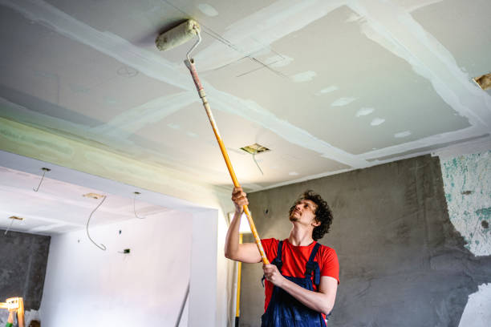

Eleele Hawaii
info@hudsonconcretecontractors.xyz
Eleele Hawaii
info@hudsonconcretecontractors.xyz

Premier concrete company in Eleele Hawaii offering comprehensive solutions for all concrete needs. Expert installation, repair, and maintenance with a focus on durability and aesthetic appeal. Contact us today!
Click Here To Call Us (877) 848-1711When it comes to durable and aesthetically pleasing concrete solutions in Eleele Hawaii our company stands out as the leading provider. With years of experience in the concrete industry, we specialize in delivering high-quality concrete installations, repairs, and maintenance services that meet the specific needs of both residential and commercial clients.
Our team of skilled professionals is committed to using the finest materials and the latest techniques to ensure your concrete projects are completed on time and within budget. Whether you need a new driveway, patio, sidewalk, or foundation, we guarantee a seamless process from start to finish. We pride ourselves on our ability to handle projects of all sizes with the utmost precision and care.
At Concrete, we understand the importance of investing in long-lasting and reliable concrete structures. That’s why we use only top-grade materials that are engineered to withstand the test of time, even in the harshest weather conditions in Eleele Hawaii . Our dedication to excellence and customer satisfaction has earned us a reputation as the go-to concrete company in the region.
If you’re searching for trusted concrete contractors in Eleele Hawaii look no further. Contact us today for a free consultation and discover why we’re the best choice for all your concrete needs in Eleele Hawaii .
Residential & commercial Concrete
Quality services at affordable prices
Immediate 24/ 7 emergency services


Concrete is renowned for its durability and strength, but even the toughest surfaces can develop cracks over time. At Hudson Concrete Contractors, serving Eleele Hawaii we understand the frustration that cracks can cause and are here to shed light on the common reasons behind these issues.
Shrinkage During Curing
One of the primary causes of cracks in concrete is shrinkage during the curing process. As concrete dries, it contracts. If the curing process is not managed properly, or if the concrete mix has high water content, this shrinkage can lead to surface cracks. Ensuring adequate curing techniques and proper mix proportions can help minimize these issues.
Temperature Fluctuations
Concrete is sensitive to temperature changes. Rapid fluctuations between hot and cold can cause expansion and contraction, leading to cracks. Extreme temperatures during setting or curing can exacerbate these problems. Implementing temperature control measures and using suitable concrete formulations can mitigate the effects of temperature changes.
Poor Concrete Mix and Compaction
The quality of the concrete mix plays a crucial role in its durability. An improperly mixed concrete or insufficiently compacted mixture can lead to weak spots that are prone to cracking. Using high-quality materials and ensuring proper mixing and compaction are essential for a long-lasting concrete surface.
Settlement and Soil Movement
Concrete slabs can crack due to underlying soil movement or settlement. If the ground beneath the concrete shifts or settles unevenly, it can cause the concrete to crack. Proper site preparation, including soil stabilization and adequate sub-base, helps prevent such issues.
Overloading
Excessive weight or stress placed on concrete surfaces can lead to cracks. Overloading beyond the designed capacity of the concrete can cause structural damage. Adhering to load limits and using reinforced concrete where necessary can prevent this problem.
For expert solutions to prevent and repair concrete cracks in Eleele Hawaii trust Hudson Concrete Contractors. Contact us today to ensure your concrete surfaces remain strong and crack-free!
Residential & commercial Concrete
Quality services at affordable prices
Immediate 24/ 7 emergency services
If you’re looking for reliable cement contractors near you, our experienced team is ready to assist. We specialize in a broad range of cement services, from mixes to installations, ensuring that your project gets the attention it deserves. Our commitment to quality, safety, and customer service makes us the preferred choice in your area. Whether you’re embarking on a small home project or large construction site, we deliver top-notch results tailored to your specifications. Choose our cement contractors for a seamless and satisfying experience.

Quality doesn’t need to come at a high price. Our affordable concrete services in Eleele Hawaii are designed to provide quality solutions for all budgets. At Concrete, we aim to offer competitive pricing without sacrificing quality. Whether you need a simple slab installation or decorative concrete work, our team works diligently to provide value for your investment. We believe in open communication and transparency about pricing, so you’ll never have to worry about hidden fees. Choose us for affordable, high-quality concrete services that stand out.

Protecting your concrete surfaces is essential for longevity and maintenance. Our concrete sealing services in Eleele Hawaii provide an effective barrier against moisture, stains, and environmental factors that can deteriorate your concrete. We use high-quality sealers designed to extend the life of your concrete surfaces while enhancing their appearance. Our experienced team ensures that every application is performed with precision and care, providing you with a protective solution that stands the test of time. Trust us to keep your concrete looking and performing its best with our specialized sealing services.

Uneven concrete surfaces can pose safety risks and create aesthetic issues. Our concrete leveling services are the ideal solution for addressing sunken or displaced concrete slabs, including driveways, patios, and sidewalks. We utilize advanced techniques such as mudjacking and poly-jacking to raise and stabilize your concrete, restoring its level and function. Our expert team focuses on delivering quick and effective results, ensuring minimal disruption to your daily routine. Choose our concrete leveling services for a safer, more visually appealing solution to your uneven surfaces.

A solid foundation is the key to any successful construction project, residential or commercial. Our concrete foundation installation services in Eleele Hawaii are designed to provide a strong, stable base for your building. We carefully assess your site and tailor our methods to ensure optimal stability and compliance with local regulations. By choosing us, you ensure that your foundation is constructed with precision, setting the stage for a durable structure that will last for generations.
If you want to enhance the aesthetic appeal of your concrete surfaces, our concrete staining services in Eleele Hawaii are the perfect solution. We offer a variety of colorful options to customize your concrete, providing a rich, vibrant appearance that mimics natural stone. Our skilled professionals use high-quality stains and techniques to achieve a seamless and beautiful finish for patios, floors, and more. Concrete staining is not only visually appealing but also adds a layer of protection to your surfaces. Trust us to transform your concrete into a stunning centerpiece of your property.

Among the many concrete construction companies, Concrete stands out due to our dedication to quality and customer satisfaction. Our comprehensive range of services covers everything from residential to commercial concrete applications, catering to every need. We focus on innovative solutions and use the best materials for all our projects, ensuring durability and visual appeal. Our experienced contractors are committed to delivering timely and cost-effective results that meet your expectations. Partner with us for your concrete projects and experience excellence in construction.

For construction projects requiring quick, reliable concrete deliveries, our ready mix concrete delivery services in Eleele Hawaii are unparalleled. We provide high-quality, pre-mixed concrete that is perfect for any application, ensuring you get the right mix, right when you need it. Our experienced drivers and logistical planning help you avoid delays on-site, so you can keep your project on track. Trust us for efficient deliveries that ensure your project runs smoothly from start to finish.
Years Experience
Expert Technicians
Satisfied Clients
Compleate Projects
Why Choose Painting Vikmanic for Your Painting Needs in Eleele Hawaii ?
At Painting Vikmanic, we pride ourselves on delivering exceptional painting services across Eleele Hawaii . Our commitment to quality, professionalism, and customer satisfaction sets us apart in the industry. With years of experience, we understand that every project is unique, and we tailor our approach to meet your specific needs and preferences.
Expert Craftsmanship and Reliable Service
Our team of highly skilled painters uses only the best materials and techniques to ensure a flawless finish every time. Whether you’re looking to refresh your home’s interior or enhance your commercial space, Painting Vikmanic guarantees meticulous attention to detail and superior craftsmanship. We handle every project with the utmost care, from thorough surface preparation to precise application, ensuring lasting results that exceed expectations.
Customer-Centric Approach
We believe in a customer-first approach, which is why we work closely with you to understand your vision and provide transparent, accurate estimates. Our friendly and professional staff are dedicated to making the painting process smooth and stress-free. We respect your time and property, ensuring minimal disruption to your daily routine.
Competitive Pricing and Satisfaction Guaranteed
At Painting Vikmanic, we offer competitive pricing without compromising on quality. Our goal is to deliver outstanding value for your investment, and we stand by our work with a satisfaction guarantee. Choose Painting Vikmanic for your next painting project in Eleele Hawaii and experience the difference of working with a trusted leader in the industry. Contact us today to schedule a consultation and discover how we can bring your vision to life.
When it comes to finding reliable concrete contractors near you in Eleele Hawaii look no further! Our expert team specializes in delivering top-notch concrete solutions tailored to your specific needs. Whether you require residential or commercial concrete services, we have the skills and experience to handle any project, big or small. What sets us apart from others is our unwavering commitment to quality, customer satisfaction, and affordability. By choosing us, you’ll benefit from our extensive knowledge of local permits, codes, and regulations, ensuring a hassle-free experience from start to finish.
In today's world, ensuring your residential concrete projects are handled by professionals is crucial. Our residential concrete services include everything from driveways and patios to foundations and decorative elements. We pride ourselves on using high-grade materials and the latest techniques to ensure durability and aesthetic appeal. By choosing us, you benefit from our commitment to excellence, timely project completion, and competitive pricing, ensuring that your home's concrete enhancements not only meet but exceed your expectations.
In the heart of any thriving business lies a commitment to quality and reliability. Our commercial concrete contractors specialize in large-scale projects that require careful planning and execution. From retail spaces to office buildings, we provide a comprehensive range of services, including concrete pouring, foundation installation, and decorative concrete finishes. With a focus on understanding the unique requirements of your business, we ensure minimal disruption while delivering results that enhance your business's functionality and appeal.
A driveway is often the first impression of your home or business. Our concrete driveway installation services are designed to provide you with a strong, durable, and visually appealing entrance to your property. We utilize advanced techniques and high-quality materials to create driveways that can withstand heavy traffic and inclement weather while enhancing the curb appeal of your property. With our expertise, you can trust that your new driveway will not only meet your needs but will also stand the test of time.
A well-designed concrete patio can transform your outdoor space into a functional and aesthetically pleasing area for relaxation and entertainment. Our concrete patio installation services in Eleele Hawaii are tailored to create the perfect outdoor living space that matches your style and needs. From simple designs to elaborate features, our skilled contractors work closely with you to bring your ideas to life. We understand the importance of quality, which is why we only use high-quality materials and adhere to best practices for installation. Choose us for an expertly crafted concrete patio that you and your family will enjoy for years to come.
Stamped concrete has become an increasingly popular choice for homeowners looking to enhance their outdoor spaces. Our stamped concrete services in Eleele Hawaii allow you to achieve the elegance of natural materials without the high upkeep and cost. With a variety of patterns and colors, our skilled installers will create stunning patios, sidewalks, and driveways that complement your home’s aesthetics. Choosing our company guarantees a flawless application, expert advice on design selections, and a commitment to your satisfaction.
A strong foundation is crucial for any structure. If you're noticing signs of foundation issues, you need reliable concrete foundation repair services. Our experts in Eleele Hawaii will evaluate your foundation and recommend the best solutions to restore its stability. We employ the latest techniques and technologies to ensure effective repairs that stand the test of time. At Concrete, we understand the complexities of foundation repair and are dedicated to providing top-notch service and support every step of the way. Invest in your property with our trusted foundation repair solutions.
Our concrete slab installation services are designed to provide a reliable base for your construction projects, whether it’s for homes, garages, or commercial buildings. With our focus on meticulous preparation and quality materials, we guarantee a durable slab that stands up to heavy loads and environmental conditions. Our experienced team will work with you throughout the entire process to ensure the installation meets your specifications, providing a cost-effective solution without sacrificing quality.
Transform your outdoor or indoor space with our decorative concrete services that are as beautiful as they are functional. From stamped and stained concrete to overlays and custom designs, we have the creative solutions to enhance your property . Our skilled team combines artistry with technical expertise to execute designs that match your style and vision. Whether it’s for patios, walkways, or flooring, our decorative services add a unique touch to any project. Choose Concrete and elevate your spaces with our stunning decorative concrete options.
If your existing concrete surfaces are showing wear and tear, our concrete resurfacing services are the perfect solution. we specialize in rejuvenating old concrete to restore its functionality and appearance. Our resurfacing options provide a durable, new finish that can be customized to fit your design needs. We use high-quality materials and advanced techniques to ensure a smooth, long-lasting surface that can withstand heavy traffic. Trust our team to extend the life of your concrete with our dependable resurfacing services.
Damaged concrete can lead to safety hazards and detract from your property’s value. Our concrete repair contractors are skilled in identifying and fixing a wide range of issues, from cracks and spalling to significant structural damage. We take a comprehensive approach to each repair project, ensuring that we address the root cause of the problem, not just the symptoms. Our team uses high-quality materials and proven repair techniques, providing you with long-lasting solutions that restore the integrity and appearance of your concrete surfaces. When it comes to concrete repair, trust us to get the job done right.
Sidewalks are not only functional but also contribute to the overall aesthetic of your property. If you’re experiencing cracks, uneven surfaces, or other issues with your sidewalks, our sidewalk concrete repair services are here to help. Our team works quickly and efficiently to restore safety and functionality to your sidewalks, using high-quality materials and techniques for a durable finish. We understand the importance of curb appeal and safety in your community. Choose us for reliable and professional sidewalk repairs that make a difference.
When it comes to flooring solutions, concrete offers unmatched durability and versatility. Our concrete floor installation services provide an attractive, low-maintenance option for both residential and commercial spaces. We can customize your concrete floors with various finishes, colors, and patterns to match your style. Our team of experts ensures a precise installation that will last for years, giving you a beautiful surface that can withstand daily wear and tear. Trust Concrete for all your concrete flooring needs and experience the benefits of this timeless choice.
When it’s time to make way for new concrete installations or renovations, our concrete removal services are here to help. We handle the complete removal process, ensuring that the project is conducted efficiently and safely. Our team is equipped with the right tools and expertise to remove concrete slabs, driveways, or any other existing structures without damaging the surrounding areas. We prioritize safety and cleanup, leaving your site ready for the next stage of your project. Choose us for hassle-free concrete removal that paves the way for your new designs.
Navigating through local concrete companies can be overwhelming, but we make it easy for you. We pride ourselves on being one of the leading local providers, offering a vast array of services catering to both residential and commercial clients. With a reputation built on integrity, quality, and customer satisfaction, we are dedicated to providing services that stand out. Choosing local means you receive personalized service, quick response times, and community support, all without compromising on quality.
Choosing the best concrete contractors is crucial for the success of your project. At Concrete, we are proud to be recognized as the best for our exceptional workmanship, attention to detail, and customer-first approach. Our team consists of skilled professionals who are passionate about delivering high-quality concrete solutions tailored to your needs. We employ the latest techniques and equipment to ensure every project is executed flawlessly, from start to finish. Experience the excellence that comes with choosing the best in the business.
Concrete pouring is a skilled task that requires precision and expertise. Our concrete pouring services are designed to provide you with a flawless and efficient pouring process, whether you need foundations, driveways, or any other concrete application. We utilize advanced equipment and high-quality materials to ensure your concrete is poured accurately and with minimal fuss. Our team works diligently to meet your project timeline and requirements, guaranteeing that you receive a smooth, durable finish for your concrete surfaces. Trust us to handle your concrete pouring needs with professionalism and care.
Understanding the factors that impact the durability and lifespan of concrete is essential for maintaining long-lasting and high-quality surfaces in Eleele Hawaii . At Hudson Concrete Contractors, we are dedicated to ensuring your concrete projects stand the test of time through proper techniques and expert care.
Mix Quality and Proportions
The quality of the concrete mix and the accuracy of its proportions significantly affect its durability. A well-balanced mix of cement, water, and aggregates ensures a strong and resilient surface. Using high-quality materials and following precise mixing guidelines prevent weaknesses that can lead to premature deterioration.
Proper Curing Techniques
Curing is crucial for the development of concrete’s strength and durability. Insufficient curing can result in a weaker surface that is more susceptible to cracks and damage. Ensuring proper curing practices, including maintaining adequate moisture and temperature, helps the concrete achieve its optimal strength and longevity.
Environmental Conditions
Exposure to harsh environmental conditions, such as extreme temperatures, heavy rainfall, or high levels of salt, can impact concrete’s durability. In Eleele Hawaii it’s essential to consider local weather conditions and take preventive measures, such as using protective sealers and additives, to enhance the concrete’s resistance to environmental stressors.
Load and Stress Factors
The amount of weight and stress placed on concrete surfaces affects their lifespan. Overloading or using concrete that isn’t reinforced for the intended load can lead to premature failure. Designing concrete mixes and structures to accommodate expected loads ensures long-term performance.
Site Preparation and Installation
Proper site preparation and installation are fundamental to concrete durability. Adequate ground preparation, proper compaction, and correct installation techniques help prevent issues such as uneven settling and surface cracking. Ensuring that these steps are completed with precision leads to a more durable concrete surface.
For expert guidance on enhancing the durability and lifespan of your concrete surfaces in Eleele Hawaii trust Hudson Concrete Contractors. Contact us today to learn more about how we can help you achieve and maintain superior concrete quality.
ʻEleʻele is located on the south side of the island of Kauai at 21°54′38″N 159°35′4″W (21.910489, -159.584330). It is bordered to the west by Hanapepe, with the Hanapēpē River forming the boundary between the two communities. Hawaii Route 50 passes through Eleele, leading east 4 miles (6 km) to Kalaheo and west 2 miles (3 km) to Kaumakani. Lihue is 17 miles (27 km) to the east via Route 50.
Concrete is a sustainable material, especially when recycled. Hudson Concrete Contractors follows environmentally friendly practices .
Yes, we use special techniques and additives to pour concrete in cold weather conditions in Eleele Hawaii ensuring proper curing.
We recommend waiting at least 7 days before driving on a new concrete driveway installed by Hudson Concrete Contractors .
Cement is a key ingredient in concrete. Concrete is a mixture of cement, sand, gravel, and water. Hudson Concrete Contractors uses high-quality concrete for all projects in Eleele Hawaii .
Yes, Hudson Concrete Contractors is fully licensed and insured to provide professional and safe concrete services .
Yes, we specialize in stamped concrete services offering decorative options to mimic stone, brick, or tile.
Yes, we offer custom concrete design services, including decorative, stamped, and colored options to match your vision in Eleele Hawaii .
Yes, we offer durable concrete retaining wall construction in Eleele Hawaii for both residential and commercial properties.
Yes, we offer concrete resurfacing services in Eleele Hawaii to restore old, worn-out surfaces and make them look brand new.
The cost of concrete work depends on the project's size and complexity. Hudson Concrete Contractors offers competitive pricing and free estimates .
Yes, we provide concrete leveling and repair services to fix uneven or sunken surfaces.
Hudson Concrete Contractors recommends high-strength, durable concrete mixes designed for heavy traffic and weather resistance for driveways in Eleele Hawaii .
The time frame depends on the project size, but most concrete projects by Hudson Concrete Contractors are completed within 3-7 days in Eleele Hawaii .
Yes, we use steel reinforcement (rebar or mesh) in concrete installations to increase strength and durability .
Proper site preparation, including grading and leveling, is crucial. Hudson Concrete Contractors handles all prep work to ensure a smooth, durable installation .
Hudson Concrete Contractors provides a range of services including driveways, patios, foundations, sidewalks, and decorative concrete installations.
Concrete is an excellent option for patios in Eleele Hawaii due to its durability, low maintenance, and customization options for color and texture.
Concrete typically takes around 28 days to fully cure, but it can be walked on within 24-48 hours. Hudson Concrete Contractors advises waiting longer for heavy loads.
Yes, Hudson Concrete Contractors offers free, no-obligation estimates for all concrete projects in Eleele Hawaii .
Concrete is low-maintenance but sealing every few years and occasional cleaning can help prolong its life. Hudson Concrete Contractors provides maintenance tips .
Yes, Hudson Concrete Contractors provides residential concrete services such as driveway, patio, and walkway installations .
Yes, we offer a variety of colored concrete options to enhance the appearance of your patios, driveways, or walkways .
Yes, Hudson Concrete Contractors provides expert concrete foundation installation for homes and commercial buildings .
A properly installed concrete driveway by Hudson Concrete Contractors can last up to 30 years with proper maintenance in Eleele Hawaii .
Absolutely. Hudson Concrete Contractors has extensive experience managing large-scale commercial concrete projects .
Yes, we provide concrete sidewalk installation and repair services for residential and commercial properties .
Yes, we provide professional concrete repair services to fix cracks, spalling, and other damage.
Yes, we offer concrete demolition and removal services for old or damaged concrete .
The best time to pour concrete is during mild weather conditions, typically in spring or fall, but we can work year-round.
Yes, Hudson Concrete Contractors has the expertise and equipment to manage large commercial and residential concrete projects .
Hudson Concrete Contractors transformed our old concrete driveway into a new, beautiful surface. Their work in Eleele Hawaii was of high quality and their service was excellent. We couldn’t be happier! — Rachel B.
Profession
We had a great experience with Hudson Concrete Contractors. Their team handled our concrete driveway installation in Eleele Hawaii with professionalism and expertise. The quality of their work is top-notch! — Greg D.
Profession
The concrete repair work by Hudson Concrete Contractors in Eleele Hawaii was top-notch. Their team was professional, and the repairs were completed efficiently. We couldn’t be happier with the results! — Rachel B.
Profession
Eleele HI Concrete Pros
(877) 848-1711
info@hudsonconcretecontractors.xyz
09.00 AM - 09.00 PM
09.00 AM - 12.00 PM